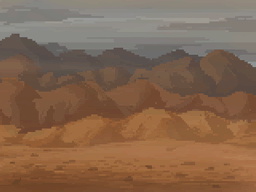

01. 基本信息
风尘丘陵是用于新手引导的地图场景, 总共就 14 个步骤, 完成任务之后将自动退回游戏主界面, 你无需在这张地图浪费时间, 因为这里的内容都不能被带到后面的场景去, 值得一提的是, 尽管它是首张地图, 但由于编号为 0 且存在感很低, 所以玩家都认为没落平原才算第一张地图, 此外为了方便总览和避免剧透, 我们将事件的详情折叠了起来, 你可以通过点击标题或下面的按钮来展开或关闭内容.
由于本页的文本非常多, 建议适当的利用浏览器的搜索功能, 只需要按下 Ctrl + F 并输入关键词即可, 标题或内容都可被查找到.
通过点击按钮来操作所有事件:

02. 主线任务
01. 教程开始
 代码: 6001
代码: 6001
模式: 纯逻辑
条件: 复合的条件
条件细节: (当前正在风尘丘陵 && 初始进入游戏);
事件结果: (打开教程遮罩 / 将车队设置到驾校(CityId=3) / 触发 # 废土驾校课程1);
02. 废土驾校课程1
 代码: 6002
代码: 6002
模式: 对话框
条件: 无限制条件
文本描述: 欢迎来到废土快递驾驶学校, 在这里你会学会如何在充满赛博疯子的废土大陆上操作卡车并完成你的订单;
# 选项01: 准备好了(关闭再打开教程遮罩 / 触发 # 废土驾校课程2);
03. 废土驾校课程2
代码: 6003
模式: 对话框
条件: 无限制条件
文本描述: 不! 你没有准备好, 你甚至连车辆都没有发动! 现在, 去买些油, 把车辆发动起来;
# 选项01: 壁事真多(添加 # 任务: [驾校作业一]);
04. 任务: [驾校作业一]
代码: 6004
模式: 提示框
条件: 复合的条件
文本描述: 先去商店购买 500 单位的汽油, 然后发动你的破车吧;
事件结果: (启用 # 命令: [发动车辆]);
————
05. 命令: [发动车辆]
代码: 1069
模式: 侧边栏
条件: 复合的条件
条件细节: (当前正在风尘丘陵 && 位于驾校(CityID=3) && 正在城市中 && 尚未触发 # 开始尝试发动车辆! > 选项01: 发动车辆);
事件结果: (触发 # 开始尝试发动车辆!);
06. 开始尝试发动车辆!
代码: 6005
模式: 对话框
条件: 无限制条件
文本描述: 我现在要发动这辆破车了;
# 选项01: 发动车辆(拥有 1000 汽油 / 耗时 25 分钟 / 关闭教程遮罩 / 播放 DrivingStart 既卡车启动声音);
1/1 概率: 很好, 接下来试试驾驶技术, 开到下个城市吧, 打开地图, 右键可设置路径点(
移除 # 任务: 驾校作业一 / 添加 # 任务: [驾校作业二]);
# 选项02: 我还没准备好;
07. 任务: [驾校作业二]
代码: 6006
模式: 提示框
条件: 复合的条件
文本描述: 试试你的驾驶技术, 先开到下个城市吧(打开地图, 右键可以设置路径点);
事件结果: (到达水稻镇(CityID=91)后将会触发 # 废土驾校课程3);
————
08. 废土驾校课程3
代码: 6007
模式: 对话框
条件: 无限制条件
文本描述: 很不错哦, 虽然驶过一望无际的大平原其实也没什么值得夸赞的, 总之赶紧进行下一项任务吧;
# 选项01: 来吧(触发 # 废土驾校课程4);
09. 废土驾校课程4
代码: 6008
模式: 对话框
条件: 无限制条件
文本描述: 如你所见, 当前这座城市水稻镇是一座农业城市, 除了食物什么都不生产. 但是相应的, 这里的食物非常便宜. 而西面的橡胶镇是一座工业城市, 盛产轮胎, 他们制作的轮胎非常便宜, 同时由于工人数量众多导致非常稀缺食物. 如果我们在水稻镇大量购入食物, 在橡胶镇大量卖出, 并卖回这里, 我们一定能赚到很多钱;
# 选项01: 是哦(触发 # 废土驾校课程5);
10. 废土驾校课程5
代码: 6009
模式: 对话框
条件: 无限制条件
文本描述: 记住, 在水稻镇买入食物, 在橡胶镇卖出食物, 然后在橡胶镇购入轮胎, 再卖回这里, 想办法让赚到更多钱吧, 这就是你的课程作业了. 完成以后回来这里找我, 这是你的贸易本金, 拿着;
# 选项01: 你是不是暗地里打算让我帮你打工赚钱啊(获得 500 零件 / 移除 # 任务: 驾校作业二 / 添加 # 任务: [驾校作业三]);
11. 任务: [驾校作业三]
代码: 6010
模式: 提示框
条件: 复合的条件
文本描述: 我们要赚到 1500 零件, 记住: 在水稻镇买入食物, 在橡胶镇卖出食物, 并购入轮胎卖回这里;
事件结果: (到达水稻镇(CityID=91), 启用 # 命令: [拜访教练]);
————
12. 命令: [拜访教练]
代码: 1070
模式: 侧边栏
条件: 复合的条件
条件细节: (在风尘丘陵的水稻镇(CityID=91) && 在城市中
&& 尚未触发 # 去拜访教练 > 选项01: 有了);
事件结果: (触发 # 去拜访教练);
13. 去拜访教练
代码: 6011
模式: 对话框
条件: 无限制条件
文本描述: 怎么, 你已经赚到 1500 零件了吗;
# 选项01: 有了(拥有 1500 零件 / 失去 1500 零件);
1/1 概率: (移除 # 任务: [驾校作业三] / 触发 # 结课);
# 选项02: 还没;
14. 结课
代码: 6012
模式: 对话框
条件: 无限制条件
文本描述: 很好, 教练把我们车上的钱搬到他的车上去, 你现在已经学会了要怎么赚钱了, 去吧, 充满财富的废土大陆正在等着你;
# 选项01: 为什么拿我的钱(拥有 1500 零件 / 失去 1500 零件);
1/1 概率: 这是学费, 教你难道不需要花时间精力吗? 看到教练身后两个持枪的彪形大汉, 我觉得教练说的有道理!(触发 # 结课);
# 选项02: 好的(本张地图的内容全部完成, 返回游戏初始界面~);